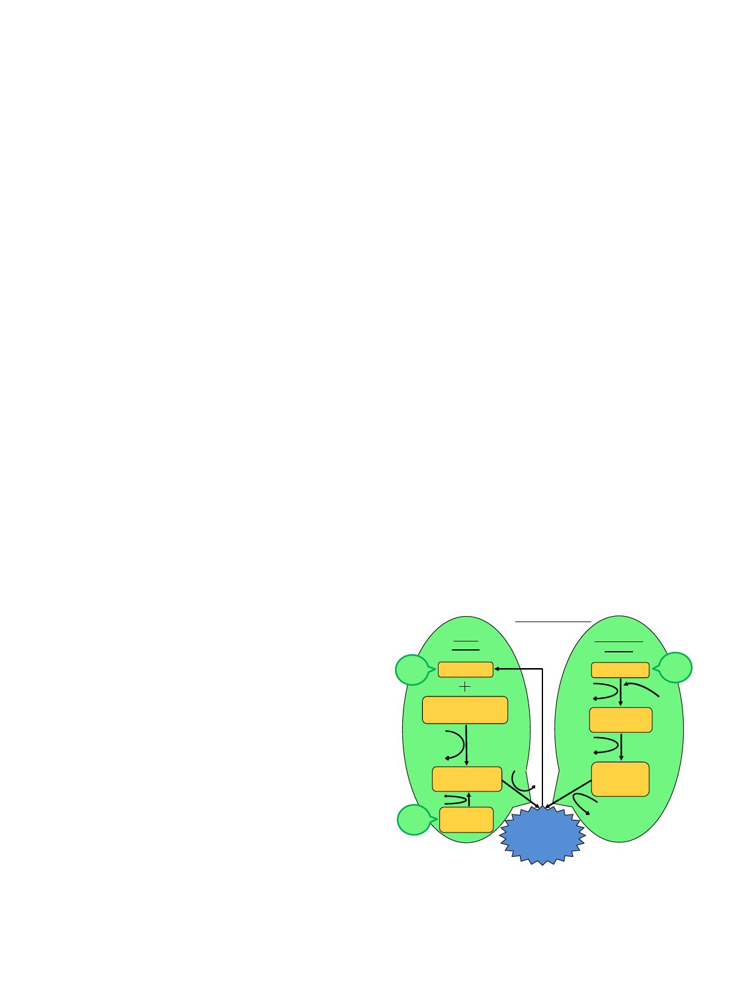

H. Nadeeshani, J. Li, T. Ying et al.
Journal of Advanced Research 37 (2022) 267–278
avocado as well as in raw beef and shrimp. The NMN content in
these vegetables and fruits are 0.25–1.88 mg/100 g and 0.26–1.6
0 mg/100 g, respectively, whereas raw beef and shrimp contain
comparatively lower level of NMN than those plant-based food
(0.06–0.42 mg/100 g). Based on the evidence of the presence of
NMN in red blood cells, it has been put forward that physiologi-
cally pertinent NMN contents, which are required for the biosyn-
thesis of NAD+ and many physiological functions, are absorbed
from daily food sources [10].
NMN is an intermediate of NAD+ biosynthesis. NAD+ is a very
important metabolic redox co-enzyme in eukaryotic organisms
and is essential component for large number of enzymatic reac-
tions. It plays a vital role in a variety of biological processes of
the body including cell death, aging, gene expression, neuroinflam-
mation and DNA repair, which indicating a significance role of
NAD+ in longevity and health of human life [12]. As revealed by
many recent studies, deficiency of NAD+ can be compensated by
the NMN supplementation that affects a range of pharmacological
activities in different disease conditions [13].
Several methods had been used to prepare and purify NMN:
incubation of diphosphopyridine nucleotide in a non-phosphate
buffer and fluoride with potato pyrophosphatase, synthesis of
NMN from nicotinamide by human hemolysates and erythrocytes,
and specific hydrolysis of pyrophosphate bond of NAD+ using NAD+
pyrophosphatase and metal catalysts [7]. However, these methods
are not rather efficient and they produce low amounts of NMN, giv-
ing rise to high price of NMN. Currently, microbial biotechnologies
are used to obtain NMN. Nevertheless, innovative methods and
optimisations are essential in order to address the high cost and
purity issues of NMN. Many studies have been performed using
simple and efficient biotechnological production and purification
methods using bacteria and yeast to make NMN production cost
effective [14].
Though at first, NMN was only considered as a source of cellular
energy and an intermediate in NAD+ biosynthesis, currently, the
attention of the scientific community has been paid on anti-aging
activity and a variety of health benefits and pharmacological activ-
ities of NMN which are related to the restoring of NAD+. Thus, NMN
has therapeutic effects towards a range of diseases, including age-
induced type 2 diabetes, obesity, cerebral and cardiac ischemia,
heart failure and cardiomyopathies, Alzheimer’s disease and other
neurodegenerative disorders, corneal injury, macular degeneration
and retinal degeneration, acute kidney injury and alcoholic liver
disease [15].
Mechanism underlying the anti-aging activity of NMN
Aging, as a natural process is identified by downregulation of
energy production in mitochondria of various organs such as brain,
adipose tissue, skin, liver, skeletal muscle and pancreas due to the
depletion of NAD+ [16]. NAD+ levels in the body decrease as a con-
sequence of increasing NAD+ consuming enzymes when aging [17].
These NAD+ consuming enzymes include NADase (CD38/CD157),
poly (ADP-ribose) polymerase (PARP), NAD+ dependent acetylase
(sirtuins), BST and tankyrase (TNKS) [18]. Sirtuins consume NAD+
in order to execute a variety of functions such as deacetylation,
deglutarylase, lipoamidase, demalonylase and desuccinylase activ-
ities. Regulation of longevity, aging and age-associated physiologi-
cal changes is one of the substantial aspects of sirtuin biology [19],
while CD38 utilises NAD+ to produce cyclic ADP-ribose and nicoti-
namide. Apart from that, PARP expends NAD+ to form branched
ADP-ribose polymers which assists in DNA repairing [20]. This
depleted NAD+ level by NAD+ consuming enzymes can be compen-
sated by administration of NMN to the body since NMN is an inter-
mediate compound of the NAD+ biosynthesis.
There are three different biosynthesis pathways to produce
NAD+ in mammalian cells including de novo synthesis from trypto-
phan, salvage and Preiss-Handler pathways. Among these three
pathways, NMN is an intermediate by-product in salvage pathway,
and it is involved in NAD+ biosynthesis through salvage and Preiss-
Handler pathways as illustrated in Fig. 3 [15]. The salvage pathway
is the most efficient and the main route for the NAD+ biosynthesis,
in which nicotinamide and 5-phosphoribosyl-1-pyrophosphate are
converted to NMN with the enzyme action of NAMPT followed by
conjugation to ATP and conversion to NAD by NMNAT [21]. Fur-
thermore, NAD+ consuming enzymes are responsible for degrada-
tion of NAD+ and consequent formation of nicotinamide as a by-
product [13]. In the Preiss-Handler pathway, initially, nicotinic acid
is converted to nicotinic acid mononucleotide (NAMN) by nicotinic
acid phosphoribosyl-transferase enzyme (NAPRT) activity followed
by biosynthesis of nicotinic acid adenine dinucleotide (NAAD+)
from NAMN using nicotinamide/nicotinic acid mononucleotide
adenylyltransferase (NMNAT 1/2/3). Subsequently, NAAD+ is trans-
formed to NAD+ by NAD+ synthetase (NADS) using ATP and ammo-
nia [22].
Chronic inflammation and oxidative stress, which come along
with aging, are the causes for reduction and inhibition of
NAMPT-mediated NAD+ biosynthesis [23]. The depletion of NAD+
contents along with aging, which particularly of nuclear origin, is
associated with interruption of mitochondrial regulation of PCG-
1a/b-independent pathway of oxidative-phosphorylation as well,
causing pseudohypoxia. This incident can be overturned by raising
the NAD+ content [24].
Apart from reducing the functions of mitochondria, biological
changes such as cognitive impairments, DNA damage and sirtulin
gene inactivation, are brought about by aging which can be evaded
by enhancing NAD+ count in the body [24]. Apart from NMN sup-
plementation, NAD+ levels in the body can be increased as a
response to conditions related to lower energy intake [25], calorie
restriction, fasting, lack of glucose content in the body and exer-
cise. Nevertheless, NAD+ levels decrease as a consequence of intake
of high-fat diets and aging [26].
Salvage
pathway
Diet
Nicotinamide
NAD consuming enzymes
Sirtuins (SIRT 1-7)
PARP 1,2,4
Preiss-Handler
CD38/CD157
BST1
pathway
TNKS 1,2
Nicotinic acid
Diet
ATP
5-Phosphoribosyl-1-
ADP
NAPRT PRPP
pyrophosphate (PRPP)
Nicotinic acid
ATP
NAMPT
mononucleotide
ATP
NMNAT 1,2,3
ADP
Nicotinamide
mononucleotide
ATP
ATP
ADP
NMNAT 1-3
ATP NRK 1,2
ADP
NADS
Nicotinic acid
adenine
dinucleotide
ATP
Diet Nicotinamide
riboside
ADP
Nicotinamide
adenine
dinucleotide
Fig. 3. NAD+ biosynthesis pathways in which NMN involves. Biosynthetic path-
ways of NAD+ in mammalian cells in which NMN involves are Preiss–Handler and
salvage pathways, and the salvage pathway is the major source of NAD+. NAMPT-
nicotinamide phosphoribosyltransferase; ATP-adenosine triphosphate; ADP-ade-
nosine diphosphate; NMNAT-nicotinamide mononucleotide adenylyltransferase;
NRK-nicotinamide riboside kinases; NAPRT-nicotinate phosphoribosyltransferase;
NADS-nicotinamide adenine dinucleotide synthetases.
269